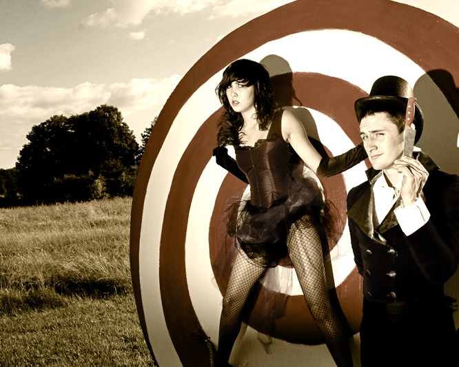

DevOps 3.0
Where we are now and what we found out on the way
Speakers
Marcel Wolf
- Ops Guy
- Roles: Ops, Dev, Speaker
- IS24: ~ 1 1/2 Years
- Application Manager
- 4 Month as System Developer
Speakers
Felix Sperling, @felixsperling
- a Developer
- past: embedded systems, low-level C/C++
- now: Java developer @ IS24
- 2 months in Ops
Speakers
Felix Sperling, @felixsperling
- a Developer
- past: embedded systems, low-level C/C++
- now: Java developer @ IS24
- 2 months in Ops
Application Management team
- Interface between Dev and Ops
- new applications are made production-ready
DevOps things we do
http://www.flickr.com/photos/reservasdecoches/3199872487/sizes/l/in/photostream/
Why its great for Devs
Why its great for Ops
Cultural preconditions to DevOps
DevOps message:
Work together and talk to each other
overcome prejudices
Best thing to overcome prejudices about a group
is to get to know someone of that group
http://www.flickr.com/photos/practicalowl/256628505/sizes/o/in/photostream/

http://www.flickr.com/photos/taylorhorne/4703686872/
http://www.flickr.com/photos/taylorhorne/4703686872/
http://www.flickr.com/photos/jimnix/4773270372/sizes/o/in/photostream/
half-time
Ops guy works as System Developer
DevOps reactions
Preconditions to play DevOps
Why you want to work as System Developer?
Not enough work?
Do you want to hide from a project?
http://smallestforest.files.wordpress.com/
Now the hardest part, i have to ask the boss
cool just do it!
I don't want to slow down the team
The hardest part
they are important
agile workspace - place for everyone
Why?
reaction of your Boss?
empowerment
text
Thank you for your attention.
Questions?